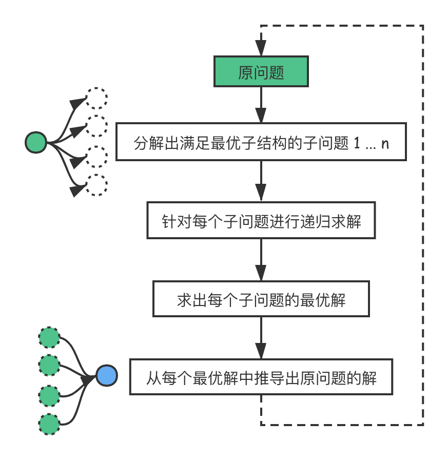
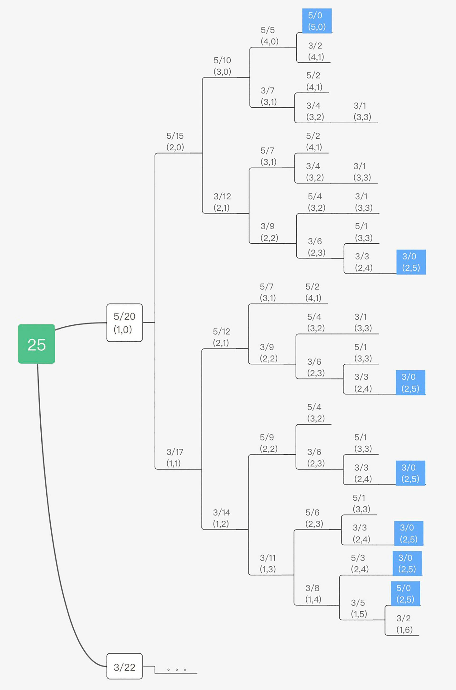
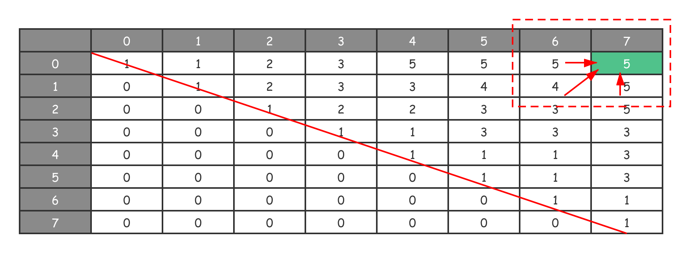
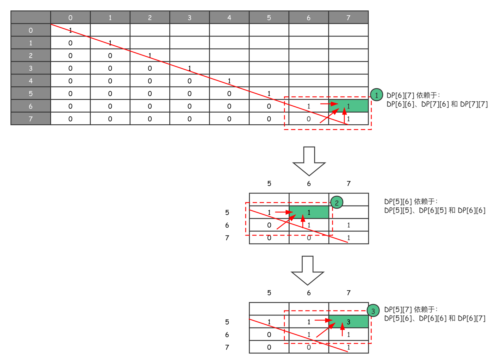

- 00 导读 动态规划问题纷繁复杂，如何系统学习和掌握它？.md.html
- 00 开篇词 为什么大厂都爱考动态规划？.md.html
- 01 硬币找零问题：从贪心算法说起.md.html
- 02 暴力递归：当贪心失效了怎么办？.md.html
- 03 备忘录：如何避免递归中的重复计算？.md.html
- 04 动态规划：完美解决硬币找零.md.html
- 05 面试即正义第一期：什么样的问题应该使用动态规划？.md.html
- 06 0-1背包：动态规划的Hello World.md.html
- 07 完全背包：深入理解背包问题.md.html
- 08 子数组问题：从解决动归问题套路到实践解题思路.md.html
- 09 子序列问题：详解重要的一大类动态规划问题.md.html
- 10 面试即正义第二期：常见的动态规划面试题串烧.md.html
- 11 动态规划新问题1：攻破最长递增子序列问题.md.html
- 12 动态规划新问题2：攻破最大子数组问题.md.html
- 13 动态规划算法设计的关键：最优子结构与状态依赖.md.html
- 14 面试即正义第三期：刷题指南，熟能生巧.md.html
- 15 课程回顾与总结（上）.md.html
- 16 课程回顾与总结（下）.md.html
- 加餐 买卖股票：常见且必考的动态规划面试题.md.html
- 结束语 在我家的后院养长颈鹿.md.html
- 捐赠
13 动态规划算法设计的关键：最优子结构与状态依赖
你好，我是卢誉声。
还记得我们曾经讨论过的吗？动态规划是运筹学上的一种最优化方法，常出现在数学、管理科学、计算机科学、经济学和生物信息学中，特别是在算法问题上应用广泛。当我们求解一个复杂问题时，会考虑把原问题分解为相对简单的子问题，再进行求解。
从这个意义上说，动态规划是一种思想，而非传统意义上的算法：如果我们要求解原问题，就需要求解其不同部分（即子问题），再根据子问题的解推导计算出原问题的解。
在专栏中，我们曾反复提及动态规划三大特征，即重叠子问题、无后效性和最优子结构。只有当原问题满足以上特征时，我们才能使用动态规划思想来进行求解。动态规划对子问题与原问题的关系、子问题之间的依赖关系这两方面有一些要求，它们分别对应了最优子结构和重叠子问题。
相较于重叠子问题和无后效性来说，理解最优子结构要稍微困难一些。最优子结构最终决定了我们求解动态规划问题的状态转移过程，甚至是动态规划算法的计算方向。因此，充分理解最优子结构的概念至关重要。
今天，就让我们深入挖掘最优子结构这个概念，以及它与计算方向之间的关系。
深入理解最优子结构
动态规划思想在求解包含重叠子问题情况的最优解时特别有效。它将问题重新组合成子问题，为了避免重复计算，我们会设计一个状态存储，即备忘录来保存中间计算状态。
备忘录使得我们在后续计算过程中出现重复计算时，可以直接拿出之前计算好的结果。整个计算过程从简单的问题直到整个问题都被解决为止，并通过备忘录，我们戏剧性地加快了算法执行的速度。
当重叠子问题的数目关于输入的规模呈指数增长时，这种做法特别有用。因此，我们说动态规划适用于求解含有重叠子问题和最优子结构性质的问题，其算法时间复杂度往往远少于朴素解法（比如穷举）。
说着说着，我们就把重叠子问题和最优子结构联系在一起了。当然了，作为动态规划问题的三大特征，它们之间即便有关系也正常。有关于重叠子问题和重复计算的概念比较简单，我曾用斐波那契数列作为示例，并通过求解树的形式讲解了其概念，有关这部分的内容你可以参见第3课。
特征与问题的关系
动态规划的三大特征（重叠子问题、无后效性和最优子结构）约束了动态规划中问题的关系。
- 重叠子问题：规定了经过拆分后的原问题中，子问题与子问题之间的关系。即更大子问题可能包含更小子问题的重复计算部分，而子问题之间也可能存在完全相同的情况。
- 无后效性：规定了子问题与子问题之间的关系。即如果A子问题的结果依赖于B子问题，那么B子问题的结果一定不能直接或者间接依赖于A。
- 最优子结构：规定了子问题与原问题之间的关系。原问题的最优解一定是由子问题的最优解组成的，如果无法通过子问题的最优解求得原问题的最优解，那么就不存在最优子结构。
可以看出，最优子结构比较特殊，它是连接子问题与原问题之间的重要桥梁。接下来，让我们看看最优子结构在动态规划中是如何解释的。
最优子结构
在动态规划能解决的三大类问题中：
- 求“最”优解问题（最大值和最小值）；
- 求可行性（True或False）；
- 求方案总数。
动态规划首要解决的是“最”优解问题（求最大值和最小值），即从很多解决问题的方案中找到最优的那一个。而求最优解问题的核心其实就是穷举，把一个大问题分解成多个子问题，然后递归找到每个子问题的最优解。最后，通过算法将每个子问题的最优解进行组合，得出原问题的答案。
因此，我们要求的原问题的最优解，是由它的各个子问题的最优解决定的。而动态规划能否成功实施，就取决于我们能否将子问题的答案，通过某种方法进行组合，进而得到原问题的答案。
我们拿第8课的“最长回文子串个数”问题为例，来看一下最优子结构与状态转移方程的关系。另原问题的解（即动态规划最终要到达的状态）为 \(DP(i, j)\)，其与子问题之间的关系定义为 \(DP(i, j) = DP(i+1, j-1)\), …conditions。
这就是状态转移方程，它描述了一种原问题与子问题的组合关系 。在原问题上的不同选择，可能对应不同的子问题或不同的组合方式：
\[DP(i, j)=\\left\\{\\begin{array}{c}- DP\[i+1\]\[j-1\],s\[i\]==s\[j\]\\\\\\- False, s\[i\] \\ne s\[j\]- \\end{array}\\right.\]
比如上述状态转移方程中的 \(s\[i\] == s\[j\]\) 或 \(s\[i\] != s\[j\]\)，就对应了原问题 \(i\) 和 \(j\) 上不同的选择，分别对应了不同的子问题和组合方式。找到了最优子结构，就能推导出状态转移方程，有了状态转移方程，我们能很快地写出原问题的递归实现。

还记得在早期的课程中我都会给出原问题求解的递归形式么，只不过后来随着我们逐渐熟悉了动态规划求解模板，我渐渐省去了这一步骤。
那么，我们再思考一个问题，即对于每个子问题，它拥有最优解的条件又是什么呢？这就要继续考察子问题是否具有无后效性，即子问题与子问题之间没有前后依赖关系，它们是相互独立的。
综上所述，所谓最优子结构，就是指原问题中各个子问题是否存在最优解，而子问题是否存在最优解的关键是它们之间相互独立。通过子问题求得最终答案的过程，我们用状态转移方程来进行描述。
在之前的课程里，我们反复强调过只有三个特征同时满足时，原问题才可以使用动态规划思想来解。这么说是有原因的，因为动态规划的最核心思想就是消除穷举过程中的重复计算，如果没有重叠子问题，我们其实也没有必要再去分析原问题是否包含最优子结构了。
所以说，最优子结构是某些问题的一种特定性质，并不是动态规划专有的特征。其实，很多问题都具有最优子结构，只是绝大多数问题都不具备重叠子问题，所以我们不把它们归为动态规划求解的范畴。这么说可能比较抽象，那么接下来我们举个例子。
假设有这样一个问题，有 n 个需要在同一天使用相同教室的活动 \(a\_{1}\), \(a\_{2}\), … , \(a\_{n}\)，教室同一时刻只能供一个活动使用。每个活动 \(a\_{i}\) 都有一个开始时间 \(s\_{i}\) 和结束时间 \(f\_{i}\)。一旦被选择后，活动 \(a\_{i}\) 就占据半开时间区间 [\(s\_{i}\),\(f\_{i}\))。如果 [\(s\_{i}\),\(f\_{i}\)] 和 [\(s\_{j}\),\(f\_{j}\)] 互不重叠，\(a\_{i}\) 和 \(a\_{j}\) 两个活动就可以被安排在这一天。该问题就是要安排这些活动，使得尽量多的活动能不冲突的举行。
我们如果认真分析一下，就会发现这个问题只需要每次选取结束时间最早的活动就行了。虽然，我们也会将原问题划分成子问题来处理，但是子问题是不包含重复计算的，因此不必使用动态规划来处理。
从以上问题可以看出，最优子结构不是动态规划问题的充分条件，而是其必要条件。绝大多数求最值的问题具有最优子结构，但并不是说这些问题都能使用动态规划思想来进行求解。
在我们使用解题模板前，我们总会优先判定原问题是否符合动态规划三大特征，这么做是有必要的，特别是确定原问题是否存在最优子结构。这是因为，动态规划解法总是从初始化状态向更复杂的子问题进行推导的，而最优子结构正是证明这种推导关系的重要证据。
寻找最优子结构的过程，就是证明状态转移方程正确性的过程。只要写出状态转移方程，我们求解的目标就实现了一大半。
分析计算方向
我们在本课中将全程围绕最优子结构这一问题展开。现在，我们知道了最优子结构是确定状态转移方向的充分必要条件，最终决定了状态转移方程。
最优子结构的定义决定了子问题依赖的方向，即动态规划算法的计算方向。我们在第9课中讲到“最长回文子序列”问题时，第一次提出计算方向这一重要概念。现在，是时候对它进行深入剖析了。
在讲解计算方向前，我们先深入挖掘一下什么是无后效性。
关于无后效性
所谓无后效性，简要一句话概括就是子问题之间的依赖是单向性的，某阶段状态一旦确定，就不受后续决策的影响。怎么理解这句话呢？
我们都知道其实动态规划是一种用空间换时间的方法，通过备忘录记录重叠子问题的最优解，确保在需要获得子问题结果的时候，不需要重复计算。所以这就需要确保一个子问题在计算完成之后，就不应该再因为其它任何因素产生变化了，不然牵一发而动全身，其它依赖于这个子问题的问题就都需要重新计算。
而动态规划需要确保效率的另一个关键在于计算方向是单向的（比如很多问题都是0到n），那么我们假设在计算第n个子问题的时候，会影响第n-1个子问题的结果（哪怕是有条件的），那岂不是所有依赖于第n-1个子问题的问题都需要重新计算！那么动态规划对时间复杂度的优化保证也就无从谈起了。
所以动态规划这种计算的单向性也就强调了子问题之前的依赖必须是单向的，换言之，如果问题A的最优解需要通过问题B的最优解直接或者间接计算出来，那么问题B的最优解必定不能直接或者间接需要通过问题A的最优解来计算。这也就是在前文中提到的，动态规划的实际计算一定是一棵树，因为树可以确保这种性质，如下图所示。

所以通过这个性质我们可以发现计算方向在动态规划里是非常重要的，而无后效性也确保了单调的计算方向是一定存在的！那么我们接下来就讨论一下计算方向。
分析计算方向
在刚开始接触动态规划问题的时候，有一个关键细节往往是大家会忽略的：在设计好了备忘录后，我们凭直觉从 0 到 n 进行计算并不断填充备忘录。
...
int dp[n]; memset(dp, 0, sizeof(dp));
for (int i = 0; i < n; i++) {
dp[i] = ... // 计算 dp[i]
}
...
而如果碰到高维备忘录，比如说二维数组，就会按照这种方法遍历：
...
int dp[m][n]; memset(dp, 0, sizeof(dp));
for (int j = 0; j < n; j++) {
for (int i = 0; i < n; i++) {
dp[i][j] = ... // 计算 dp[i][j]
}
}
...
这看起来很正常嘛，很多人会因此得出一个“结论”：在处理动态规划问题时，只要从左上角到右下角（即从左到右，从上到下）计算就可以了 。但是，当我们学习到第9课中的“最长回文子序列”问题时，情况就有些不对了。想想当时我们是怎么进行遍历的？
为了方便起见，我直接给出当时编写的代码：
int GetLongestPalindromeSubseq(string s) {
int n = static_cast<int>(s.size());
if (0 == n) return 0;
int dp[n][n]; memset(dp, 0, sizeof(dp));
for (int i = 0; i < n; i++) dp[i][i] = 1; // 初始化状态
for (int i = n-1; i >= 0; i--) {
for (int j = i+1; j < n; j++) {
if (s[i]==s[j]) {
dp[i][j] = 2 + dp[i+1][j-1];
} else {
dp[i][j] = max(dp[i+1][j], dp[i][j-1]); // 作出进一步决策
}
}
}
return dp[0][n-1]; // 输出答案
}
我们仔细看一下两个 for 循环的具体处理，就会发现，这里我们不仅没有从左上角到右下角计算，抑或是从右下角到左上角计算。反而，我们在“斜着”进行状态转移和执行计算过程！
通过以下状态转移图，你就能清晰地看出这个特别的计算方向。

由于待求解问题、最优子结构和状态转移方程设计的特殊性，原问题的答案最终存储在了 \(DP\[0\]\[n-1\]\)，即 \(DP\[0\]\[7\]\) 的位置上。
因此，当最优子结构和状态转移方程要求我们按照别的计算方向进行求解时，问题变得愈发扑朔迷离了，极具迷惑性。我们曾不止一次提到动态规划是算法领域采用求解模板的典范，所以说这个计算方向的问题，也一定是有规可循的。
其实，我们只要把握住动态规划的核心概念，这个迷惑行为就能迎刃而解了。那么核心问题是什么？其实就是子问题之间的状态依赖，即当前子问题的计算，是要依赖于其它子问题计算得出的。
让我们再仔细分析一下这个“最长回文子序列”问题。根据当时的备忘录定义，由于最终需要的答案存放在 \(DP\[0\]\[n-1\]\) 中，因此需要从最右下角反向推导：\(DP\[i\]\[j\]\) 需要的是其左侧 \(DP\[i\]\[j-1\]\)、左下角 \(DP\[i+1\]\[j-1\]\) 以及正下方 \(DP\[i+1\]\[j\]\) 的值来满足上述状态转移方程。
以下红色虚线框，就是最后一次子问题求解的计算过程，\(DP\[0\]\[7\]\) 依赖于 \(DP\[0\]\[6\]\)、左下角 \(DP\[1\]\[6\]\) 和正下方 \(DP\[1\]\[7\]\) 这几个子问题，求得了最后问题的答案。但是从代码上可以看出，我们的计算是从右下角斜向左上角计算的，具体参见下图：

从图示也可以看出，我们的计算的确是斜向左上角计算的。当然，这只是解决“最长回文子序列”问题时的计算方向。如果遇到新问题时，我们该怎么办呢？把握住以下几点即可：
- 遍历的过程中，所需的状态必须是已经计算出来的。比如在上面这个问题里，\(DP\[6\]\[7\]\) 未知，如果要求它，就需要依赖已经计算出来的子问题答案：\(DP\[6\]\[6\]\)、\(DP\[7\]\[6\]\) 和 \(DP\[7\]\[7\]\)；
- 遍历的终点必须是存储结果的那个位置。比如在上面这个问题里，最终计算方向要到达的终点就是 \(DP\[0\]\[7\]\)。
其实，我们主要就是看需要依赖哪些子问题，以及最终结果的存储位置。
现在，你应该理解了最优子结构与计算方向之间的重要关系了。对于计算方向的最终确定，它与最优子结构和状态转移方程的设计有着直接关系，依据每个人的求解习惯不同而不同，因此需要通过练习来灵活掌握。
课程总结
动态规划只能应用于有最优子结构的问题。所谓最优子结构，就是指局部最优解能决定全局最优解（对有些问题这个要求并不能完全满足，故有时需要引入一定的近似）。简单地说，就是问题能够分解成子问题来解决。
最优子结构规定了子问题与原问题的关系，最终指导我们写出状态转移方程。与此同时，它还指导了具体代码实现的计算方向。
在本专栏中，计算方向是最后一个提及的内容，但它却十分重要。考虑好正确的计算方向，才能写出正确的循环迭代代码。而对于计算方向的确定，我们主要看需要依赖哪些子问题，以及最终结果的存储位置就可以了。
课后思考
这是一个叫做“编辑距离”的动态规划问题：给你两个单词 text1 和 text2，计算出将 text1 转换成 text2 所使用的最少操作数 。你可以对一个单词进行如下三种操作：
- 插入一个字符；
- 删除一个字符；
- 替换一个字符。
示例：
输入：text1 = "giraffe", text2 = "irbff"
输出：3
解释：1）giraffe -> iraffe (删除 'g')
2）iraffe -> irbffe (将 'a' 替换成 'b')
3) irbffe -> irbff (删除 'e')
请你看一下这个问题，然后分析一下里面的最优子结构。
欢迎留言和我分享，我会第一时间给你反馈。如果今天的内容让你对动态规划算法设计的关键有了进一步的了解，也欢迎把它分享给你身边的朋友，邀请他一起学习！
© 2019 - 2023 Liangliang Lee. Powered by gin and hexo-theme-book.